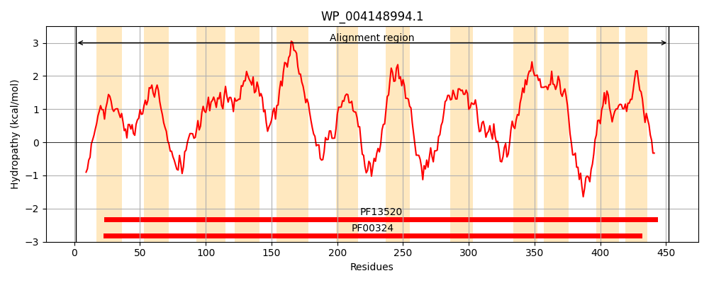
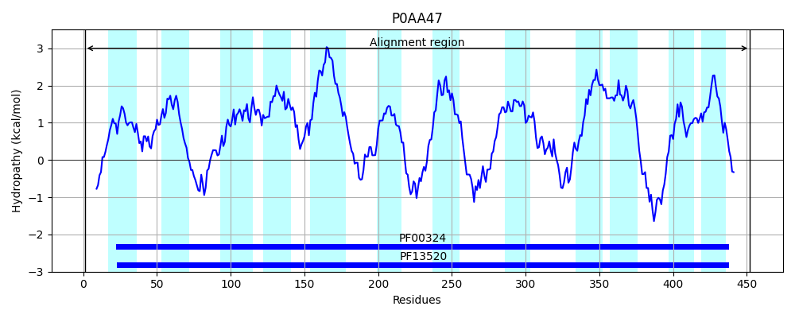
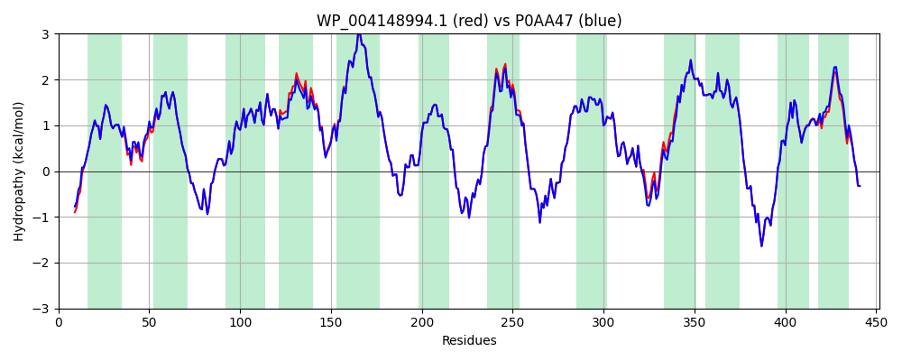

Hit Accession: P0AA47
Hit TCID: 2.A.3.1.14
Hit Description: gnl|BL_ORD_ID|8640 gnl|TC-DB|P0AA47|2.A.3.1.14 Low-affinity putrescine importer PlaP OS=Escherichia coli (strain K12) GN=plaP PE=1 SV=1
Mach Len: 452
e:0.000000
Query TMS Count : 12
Hit TMS Count: 12
TMS-Overlap Score: 11.900000
Predicted Substrates:CHEBI:8650;putrescine
BLAST Alignment:
Score: 2264 , Bit scores: 876 bits, E-value: 0.0e+00, Alignment length: 452, Percentage identity: 97
Query: 1 MSHNATPNTSRVELRKTLTLVPVVMMGLAYMQPMTLFDTFGIVSGMTDGHVPTAYAFALIAILFTALSYGKLVRRYPSAGSAYTYAQKSISPTVGFMVGWSSLLDYLFAPMINILLAKIYFEALVPSIPSWVFVIALVAFMTAFNLRSIKSVANFNTVIVVLQVVLIAVILGMVIYGVFEGEGAGTLASSRPFWSGDAHVIPMITGATILCFSFTGFDGISNLSEETKDAERVIPRAIFLTALIGGLIFIFATYFLQLYFPDISRFKDPDASQPEIMLYVAGKAFQVGALIFSTITVLASGMAAHAGVARLMYVMGRDGVFPKSFFGYVHPTWRTPAMNIILVGAIALLAINFDLVMATALINFGALVAFTFVNLSVISQFWIREKRNKTLKDHFQYLFLPMCGALTVGALWVNLEESSMILGLIWAGIGLVYLACVTKSFRNPVPQYEDVA 452
MSHN TPNTSRVELRKTLTLVPVVMMGLAYMQPMTLFDTFGIVSG+TDGHVPTAYAFALIAILFTALSYGKLVRRYPSAGSAYTYAQKSISPTVGFMVGWSSLLDYLFAPMINILLAKIYFEALVPSIPSW+FV+ALVAFMTAFNLRS+KSVANFNTVIVVLQVVLIAVILGMV+YGVFEGEGAGTLAS+RPFWSGDAHVIPMITGATILCFSFTGFDGISNLSEETKDAERVIPRAIFLTALIGG+IFIFATYFLQLYFPDISRFKDPDASQPEIMLYVAGKAFQVGALIFSTITVLASGMAAHAGVARLMYVMGRDGVFPKSFFGYVHP WRTPAMNIILVGAIALLAINFDLVMATALINFGALVAFTFVNLSVISQFWIREKRNKTLKDHFQYLFLPMCGALTVGALWVNLEESSM+LGLIWA IGL+YLACVTKSFRNPVPQYEDVA
Sbjct: 1 MSHNVTPNTSRVELRKTLTLVPVVMMGLAYMQPMTLFDTFGIVSGLTDGHVPTAYAFALIAILFTALSYGKLVRRYPSAGSAYTYAQKSISPTVGFMVGWSSLLDYLFAPMINILLAKIYFEALVPSIPSWMFVVALVAFMTAFNLRSLKSVANFNTVIVVLQVVLIAVILGMVVYGVFEGEGAGTLASTRPFWSGDAHVIPMITGATILCFSFTGFDGISNLSEETKDAERVIPRAIFLTALIGGMIFIFATYFLQLYFPDISRFKDPDASQPEIMLYVAGKAFQVGALIFSTITVLASGMAAHAGVARLMYVMGRDGVFPKSFFGYVHPKWRTPAMNIILVGAIALLAINFDLVMATALINFGALVAFTFVNLSVISQFWIREKRNKTLKDHFQYLFLPMCGALTVGALWVNLEESSMVLGLIWAAIGLIYLACVTKSFRNPVPQYEDVA 452 | Protein Hydropathy Plots: |
|---|
|  |  |
Pairwise Alignment-Hydropathy Plot:
|
|---|
|  |